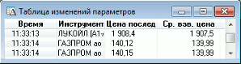

меню Создать окно / Таблица Изменений...
Отслеживание динамики изменения однотипных параметров для разных инструментов
в табличной форме. Растущая вниз таблица, столбцами которой являются выбранные пользователем
параметры, а строки фиксируют изменения этих параметров в определенный момент
времени по какому-либо инструменту, выбранному пользователем. Отличается от
таблицы истории тем, что один параметр может относиться к разным инструментам,
при этом инструмент отображается во втором фиксированном столбце таблицы.  Значения полей параметров указаны в Приложении. Списки доступных для построения таблицы инструментов и параметров зависят от Настройки потока данных.
Данные из таблицы доступны для копирования и вывода через DDE-сервер. Функции, доступные для данной таблицы, могут быть вызваны из пункта меню Действия или контекстного меню таблицы.
Дополнительно:
См. также Формат сохранения в текстовый
файл.Назначение
Формат таблицы
Доступные функции